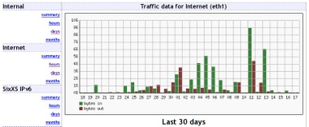

PHP-Frontend für vnStat
Dieser Artikel wurde für die folgenden Ubuntu-Versionen getestet:
Ubuntu 14.04 Trusty Tahr
Zum Verständnis dieses Artikels sind folgende Seiten hilfreich:
vnStat PHP frontend  bereitet die vom Netzwerkmonitor vnStat gesammelten Daten auf und liefert als Ergebnis übersichtliche Berichte. Ein Beispiel:
bereitet die vom Netzwerkmonitor vnStat gesammelten Daten auf und liefert als Ergebnis übersichtliche Berichte. Ein Beispiel:

Voraussetzungen¶
Das Programm setzt einen Webserver mit PHP-Unterstützung (inklusive der Bibliothek php5-gd) voraus. Weitere Informationen zur Installation finden sich in den Artikeln:
Darüber hinaus muss das Programm installiert [1] sein, das die Daten zum Netzwerkverkehr liefert:
vnstat (universe)
 mit apturl
mit apturl
Paketliste zum Kopieren:
sudo apt-get install vnstat
sudo aptitude install vnstat
Installation¶
Das Archiv vnstat-php-frontend-master.tar.gz  kann von der Projektseite heruntergeladen werden. Anschließend muss das Paket mit Root-Rechten [2] nach /usr/share/vnstat-php entpackt werden [3].
kann von der Projektseite heruntergeladen werden. Anschließend muss das Paket mit Root-Rechten [2] nach /usr/share/vnstat-php entpackt werden [3].
Hinweis!
Fremdsoftware kann das System gefährden.
Konfiguration¶
Da neben der eigentlichen Konfiguration des Frontends auch eine Apache-Konfiguration benötigt wird, sollte zunächst ein zentrales Konfigurationsverzeichnis unter /etc/vnstat-php angelegt werden. Anschließend sollte die config.php des Frontends dorthin verschoben werden und als Ersatz eine symbolische Verknüpfung angelegt werden [4]:
sudo mkdir /etc/vnstat-php sudo mv /usr/share/vnstat-php/config.php /etc/vnstat-php/config.php sudo ln -s /etc/vnstat-php/config.php /usr/share/vnstat-php/config.php
Frontend konfigurieren¶
Nun muss die Datei /etc/vnstat-php/config.php entsprechend angepasst [5] werden. Die wichtigsten Abschnitte im Einzelnen:
Netzwerkschnittstelle¶
Welche Netzwerkschnittstellen überwacht werden sollen. Um beispielsweise die Schnittstellen eth0 und wlan0 zu überwachen:
$iface_list = array('eth0', 'wlan0');Soll der für die Netzwerkschnittstellen angezeigte Name geändert werden, kann dies im Anschluss geschehen. Eine Benennung der Netzwerkschnittstellen ist jedoch optional. Um beispielsweise die Schnittstelle eth0 als LAN-Verbindung und wlan0 als WLAN zu bezeichnen:
$iface_title['eth0'] = 'LAN-Verbindung'; $iface_title['wlan0'] = 'WLAN';
Apache konfigurieren¶
Nun muss noch der Apache-Webserver konfiguriert werden. Hierzu legt man die Datei /etc/vnstat-php/apache.conf an und trägt dort die folgenden Daten ein:
Verzeichnis¶
Um das Frontend auf dem Webserver unter http://localhost/vnstat verfügbar zu machen, muss in die Konfiguration das Folgende eingetragen werden:
Alias /vnstat /usr/share/vnstat-php
Grundlegende Konfiguration¶
Als Basis-Konfiguration sollte, zusätzlich zur obigen Alias-Direktive, folgendes hinzugefügt werden:
<Directory /usr/share/vnstat-php/> Options FollowSymLinks AllowOverride None Require all granted <IfModule mod_php5.c> php_admin_flag engine On php_admin_value open_basedir "/usr/share/vnstat-php/:/etc/vnstat-php/" </IfModule> </Directory>
Zugang mit einem Passwort schützen¶
Soll der Zugang mit einem Passwort geschützt werden, kann dies mit htpasswd geschehen. Zur Verwaltung der Login-Daten liefert Apache ein praktisches Hilfsprogramm mit:
htpasswd -c /etc/vnstat-php/htpasswd -s BENUTZERNAME
Nach dem zu verwendenden Passwort wird automatisch gefragt. Soll mehr als ein Benutzer hinzugefügt werden, muss -c weggelassen werden. Soll ein Benutzer gelöscht werden, kann statt -c der Schalter -D verwendet werden.
Anschließend muss innerhalb von <Directory ...></Directory> ein neuer Abschnitt eingefügt werden:
<IfModule mod_authn_file.c> AuthType Basic AuthName "vnStat" AuthUserFile /etc/vnstat-php/htpasswd </IfModule> Require valid-user
Zugang bestimmten Benutzern erlauben/verbieten¶
Hierzu muss in der apache.conf die Zeile Require angepasst werden. Um den Zugang beispielsweise nur vom lokalen Rechner zu erlauben, kann Folgendes verwendet werden. Für andere Einstellungen siehe die Konfiguration von Apache .
Require local
Seite automatisch neu laden¶
Soll die Seite regelmäßig neu geladen werden, beispielsweise alle 5 Minuten (300 Sekunden), muss der apache.conf innerhalb von <Directory ...></Directory> das Folgende hinzugefügt werden:
<IfModule mod_expires.c> ExpiresActive On ExpiresDefault M300 </IfModule>
Links¶
jsvnstat - interactive network traffic analysis
- Alternative, benötigt kein PHP (JavaScript)vnStat - Hauptartikel
Netzwerk-Monitoring
 Übersichtsartikel
Übersichtsartikel
- Erstellt mit Inyoka
-
 2004 – 2017 ubuntuusers.de • Einige Rechte vorbehalten
2004 – 2017 ubuntuusers.de • Einige Rechte vorbehalten
Lizenz • Kontakt • Datenschutz • Impressum • Serverstatus -
Serverhousing gespendet von